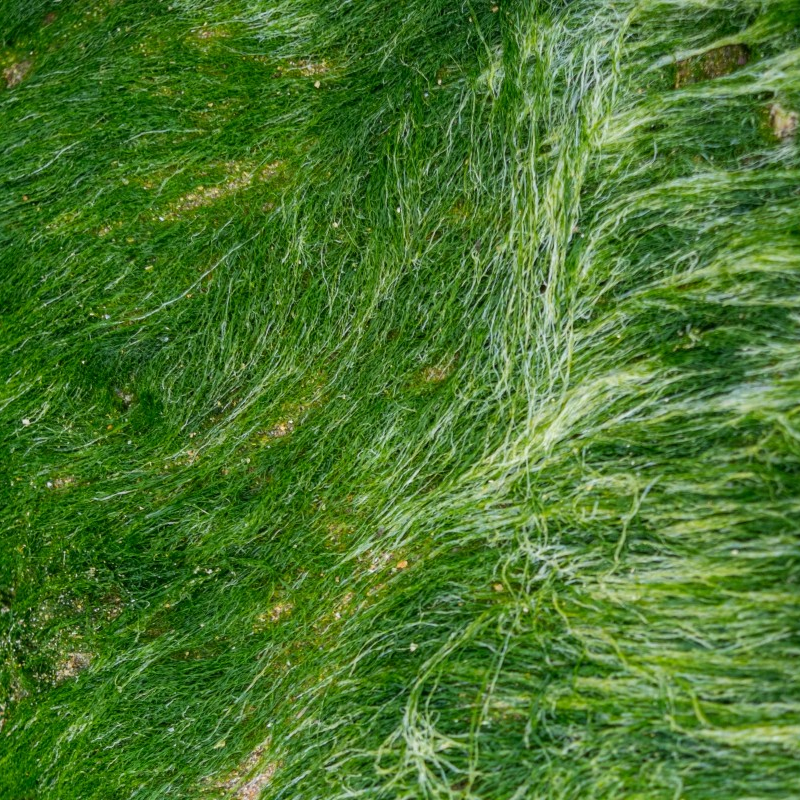

Низшие растения
Сборная группа живых организмов, которым не свойственно разделение
на органы и ткани. К таким организмам относятся водоросли
(автотрофные протисты).
Перейти к изучению

Высшие растения
Растения, тело которых дифференцировано на органы и ткани, с многоклеточными органами бесполого и полового размножения.
Перейти к изучению
Дополнительная литература
Хочешь найти дополнительную информацию по интересующей теме?
Перейти к изучению